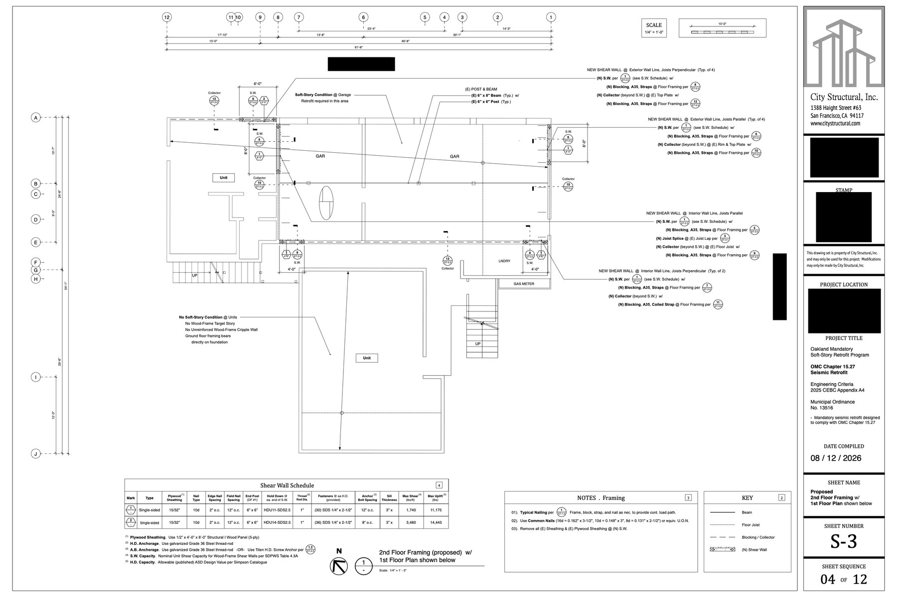
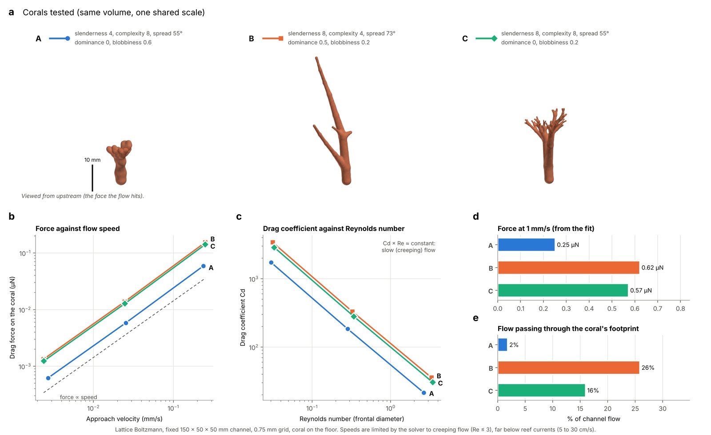
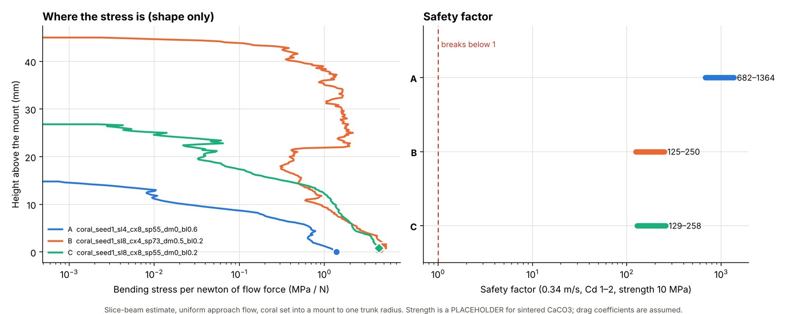
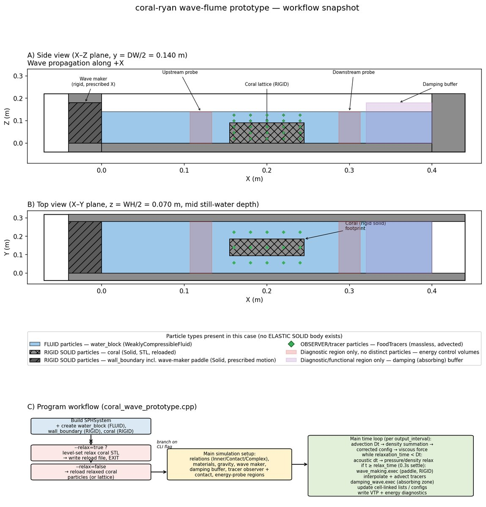
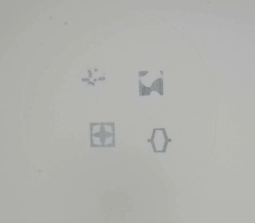
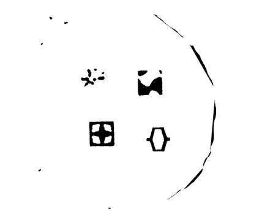
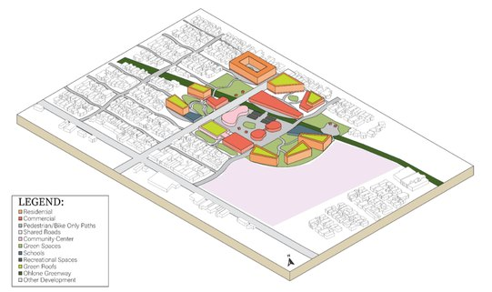
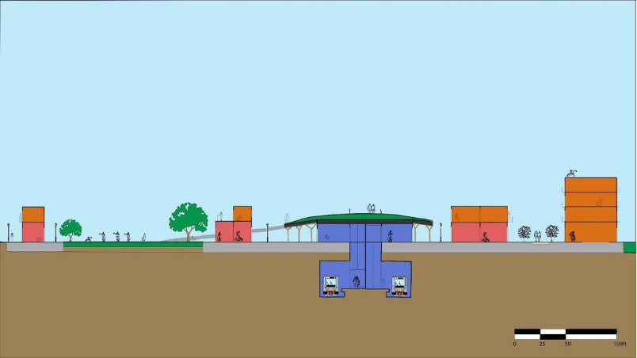

Professional work
Soft-story seismic retrofit
City Structural, Inc. · San Francisco · 2026 · Layout, SketchUp, AutoCAD

The work
Oakland's mandatory retrofit ordinance requires older wood frame buildings with a weak ground storey to be strengthened. This sheet locates new shear walls, collectors, blocking and straps through an existing building so that lateral load has a continuous path down to the foundation, and calls out where the soft-storey condition exists and where it does not.
What I do
I work from existing building conditions to produce the plan sets and documentation issued for permitting and construction, run the supporting design calculations, and check the drawings against the governing code and ordinance requirements before they go out.
What this kind of drawing has to do
A retrofit drawing is read by a plan checker, a contractor and an inspector, and each one needs something different from it. The shear wall schedule has to be unambiguous about fastener type and spacing. The notes have to survive being read on a jobsite. Every callout has to point somewhere real. Most of the care goes into removing the ways a sheet can be misread.
Confidentiality. Floor plans are shown with my supervisor's permission. The project location and the engineer of record's seal and signature are redacted, and no detail sheets are included.
Research
Coral geometry under flow
Gu Research Group, UC Berkeley · 2025 to present · MATLAB, lattice Boltzmann CFD
The problem
The group needs to know how a coral's shape changes the flow around it, which means generating many geometries and testing them under identical conditions. The existing generator had too many free parameters to sweep efficiently, so the first task was to shrink the input space without losing the range of shapes worth testing.
What I did
I fixed volume, seed and minimum branch thickness so every specimen is directly comparable, and reduced the generator to five shape inputs: slenderness, complexity, spread angle, dominance and blobbiness. Three representative geometries at equal volume then went through a lattice Boltzmann channel, 150 by 50 by 50 mm on a 0.75 mm grid, with the coral seated on the floor.

What it showed
Shape matters more than volume. The compact form carries 0.25 µN at 1 mm/s against 0.62 µN for the slender form, roughly two and a half times the load for the same amount of material. The flow result is more striking. The compact form passes 2 percent of channel flow through its footprint against 26 percent for the open one. Compact corals push water around themselves. Open branching corals let it through.

Structure, and what I would fix
Stress concentrates at the mount, but the slender form carries it the whole way up while the compact form sheds it within 15 mm. Nothing is near failure, with safety factors of roughly 125 to 1364, though the strength value is a placeholder for sintered calcium carbonate. The real limitation is the solver. These runs cap at Reynolds 3, far below reef currents of 5 to 30 cm/s, so the ranking should hold but the absolute forces are not yet transferable.
Research
Wave flume and fabrication
Gu Research Group, UC Berkeley · 2026 · SPHinXsys, C++, binder jet printing, image segmentation
The setup
The geometries feed a smoothed particle hydrodynamics wave flume: a paddle wavemaker at one end, the coral as a rigid solid on the floor, energy probes upstream and downstream, and a damping buffer at the far end to stop waves reflecting back into the measurement.

The decision I owned
Every archived run in the group repository used a damping strength of 20, but nobody had checked whether that was right or simply the first value that worked. I ran the first sweep of it, at 2.5, 5, 10, 20 and 40 in an empty tank, and measured how much wave energy each setting absorbed. A strength of 20 sits on the flat part of the absorption curve. Dropping to 2.5 leaves roughly 16 percent more energy in the tank, which is enough to contaminate a measurement, while raising it to 40 buys about 2 percent over 20 at a higher computational cost. I recommended keeping 20, which now has a reason behind it rather than an inheritance.
Print quality control
Alongside the simulation work, the group prints lattice test structures in boron carbide on an Oasis binder jet printer. Binder jetting leaves defects that are easy to miss by eye at this scale, so I segment photographs of the build plate to binary and use the result to identify print errors before parts go on to testing. Thresholding removes the surface sheen and plate curvature that otherwise corrupt edge detection.


Competition
Campanile Commons
Cal Sustainable Solutions (ASCE), UC Berkeley · 2025 · 2nd Place, ASCE Nationals


The brief
Each year the team responds to a mock request for proposal with a complete sustainable development, then defends it in front of a judging panel. Campanile Commons was the 2025 entry. I worked on the water and environment sub-team.
My scope
I modelled the development in SketchUp, including the hydrogen fuel cells, the central community area, the buildings and the green walls, and helped produce the Twinmotion render that became the submission cover. I also ran material calculations and cost estimating for the proposal, and calculated the energy and water consumption of the green walls.
A decision and a tradeoff
I calculated the building loads to work out where machinery could sit. We wanted the solar panels on the roof alongside the hydrogen fuel cells, which would have kept generation close to the equipment it served and freed up ground area. The combined load was too great for the roofs, so we dedicated a section of the site to the panels instead. That buys a structure that works, but it costs usable land and separates the panels from the fuel cells they were meant to sit beside.
Design cohort
El Cerrito BART redevelopment
Design and Innovation for Sustainable Cities (DISC), UC Berkeley · Summer 2025 · Rhinoceros


The project
A summer cohort proposal for transit oriented redevelopment around the El Cerrito BART station. I produced the site analysis behind it, researching the water, environmental and energy systems the site would have to work with, and presented the concept in formal design reviews.
What the analysis drove
Spacing the buildings deliberately increased shade across the site and raised its albedo, which lowers the heat the development absorbs. Improving transit access reduces how much parking the site has to carry, which frees land for something better. We also designed for a near future with more automation and delivery robots, which lets more of the circulation be walkable paths instead of roads.
About
A bit more
I am a third year at UC Berkeley studying Environmental Engineering Science with a minor in Conservation and Resource Studies, graduating in May 2028.
Most of what I do falls into three places. I am a design engineer intern at City Structural in San Francisco, where I produce drawing sets and the calculations and documentation behind them. I do research in the Gu Research Group, modeling how water moves around submerged structures. And I am the water specialist on Cal Sustainable Solutions, Berkeley's ASCE competition team, where I own the water and environment scope of a proposal we then have to defend in front of judges.
I also work as a civil engineering AI trainer, writing engineering problems used to train and evaluate AI models and checking their answers against what the right answer should be. It has made me a lot more specific about which parts of a technical workflow a model can be trusted with and which ones still need a person.
The thread through all of it is water. What I like most is the beginning of a project, when the problem is not defined yet and you have to work out what is actually being asked before you can solve anything.
Tools
- Drawing and modeling: AutoCAD, SketchUp, Layout, Rhinoceros 8, Twinmotion
- Analysis: MATLAB, Python, SPHinXsys, Microsoft Excel
- Coursework: water chemistry, environmental engineering, fluid mechanics, thermodynamics